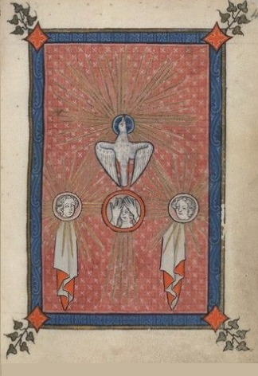
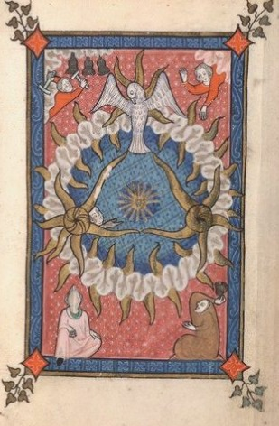
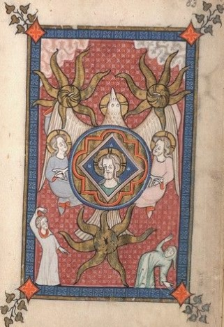
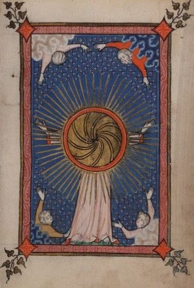

Flandres, 1300-1350
Biblioteca da Universidade de Yale
Beinecke MS 404
Fólios 39r, 41r, 78r, 82r e 97r.
A iconografia medieval está cheia de signos polissémicos, que ajudam à compreensão de um léxico universal, geralmente baseado na cultura cristã e na adaptação de motivos que lhe eram anteriores e que já pertenciam à cultura clássica e, antes dela, à cultura das civilizações da Mesopotâmia, indo entroncar na iconografia pré-histórica, repleta de triskelions, espirais e astros. Nestas iluminuras pode-se sempre ver a representação da mesma coisa, que são todas as coisas ao mesmo tempo. Cristo, ao centro, significado pela posição que assume, em forma de cruz, pelas suas feridas, ou pelo seu coração. Nos cantos, conforme as razões iconológicas encontradas, podem-se ver quatro anjos, ou quatro evangelhos. cada qual por vezes emergente de uma nuvem, decorada com motivos trifoliados, significantes da trindade do Deus que está no céu. Esse Deus, que é o pai, o filho e a pomba. Que é o triângulo. Que é a estrela. Que é a palavra dos quatro evangelhos. Em cada canto ainda, 4 losangos, com uma cruz inscrita em cada um. E talvez a forma losangular, vulgarmente adoptada nas representações da ferida de Cristo, as signifique também pelo ramo de cinco folhas emergente em cada canto. Cada uma das folhas, trifoliada numa alusão ao divino e à árvore de onde emerge a vida. Se assim for, os quatro anjos podem ser quatro chagas, que compõe a paixão de Cristo, complementadas com a chaga central do coração. Nesse, vamos encontrar tudo. O infinito. O alfa e o ómega. O princípio e o fim, na espiral do remoinho dos ventos, do movimento perpétuo das 4 estações, do labirinto, da roda da fortuna, da suástica e de outros motivos que a breve trecho serão revelados.